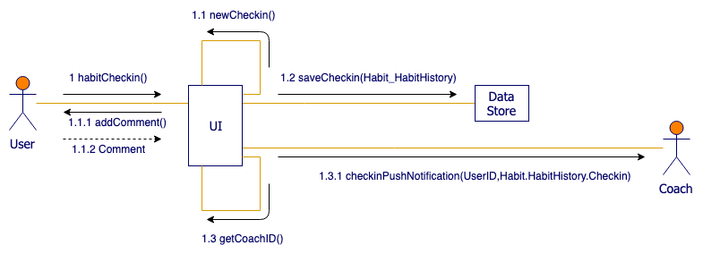

The Unified Modeling Language (UML) is a diagramming notation (language) that lets you visualize systems and software. It’s one of the most popular forms of diagramming in software development and became an ISO standard in 1997. Since then, there have been a few updates to add extra UML diagram types and to support new technologies in programming.
There are two main categories and 14 different types of UML diagrams, each of which is used in a different situation.
Use case diagrams in UML are used during the requirements phase of software development – they usually put the system requirements into a diagram format, and it’s easy to see what actions a system must support at a glance.
Of course, there will be many use cases for your system, and therefore you will usually need to draw many use case diagrams!
Along with other UML diagrams, such as activity, sequence and component diagrams, use case diagrams help you to visualize your software and requirements, before jumping in and starting to program.
Probably the most well known structural diagram are class diagrams, which specify the data structures and their relationships within your program.
Object oriented programming languages are based on classes and the relationships between them.
UML class diagram notation was developed to represent these programs visually.
Classes contain their attributes (their data) and behaviors (member functions), and are related to each other with a variety of connectors.
More specfic to programming particularily, but can be used in general business.
Easier when you have a class diagram to work off of. Probably will have to go back a lot and modify earlier diagrams.
Takes class data and interactions, and shows how it all fits together.

Good for visually modeling out the process.
Like use case diagrams, activity diagrams model the behaviour of users and systems as they follow a process.
They are a type of flow chart or workflow, but they use slightly different shapes.
State diagrams have been used in programming to describe the various possible states that a system can be in for decades.
They also quickly show which states lead to each other, and what triggers a change of state.
The biggest difference between state diagrams and activity or interaction overview diagrams is that state diagrams do not (necessarily) show the sequence.
They just show what states are possible and their entry and exit points, not when those states are entered.
These UML diagrams are a combination of an activity diagram and sequence diagrams.
Each individual activity or interaction is placed in its own frame, making it easier to see the different paths that need to be programmed when there are complex if-then-else decisions.
Decisions are outside of the frames to show the flow of control between the various interactions.
The interactions themselves, inside the frames, are very similar to sequence diagrams.
Between the interactions you will have decisions (diamonds) and fork and join nodes (solid horizontal rectangles), and connectors to show the flow of control.
There are also initial and final nodes to show the start and end of the overarching interaction.
Communication diagrams are another way to visualize the information more commonly represented by UML sequence diagrams.
They are simpler than sequence diagrams and only show the messages that pass between the objects or roles in a software program, infrastructure, or any kind of process.
If you have multiple scenarios in one use case, UML communication diagrams help you clearly identify what messages (data) need to be sent between objects/roles in each specific scenario.
